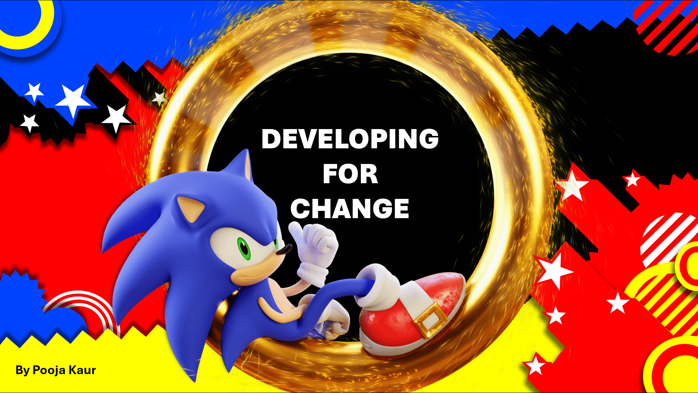

What was it?
This project involved designing and developing a content-managed website using WordPress, then replicating the same design as a fully static site using HTML, CSS, and Bootstrap. I chose to theme the website around Sonic the Hedgehog, a character who first introduced me to the world of video games and inspired my interest in game art.
My aim was to create an information website celebrating Sonic’s history, multimedia legacy, and unique design identity. The project also required the site to be editable by a peer, which challenged me to think about layout flexibility and how the UX adapts when someone else controls the content.
- Project: Developing for Change
- Tools: WordPress, Figma, VSCode, HTML/CSS, Photoshop
- Date: 2025
The Challenge
The most significant challenge in this project was learning how to work with WordPress. Although I had developed coded sites before, the structure of WordPress themes, widgets, plugins, and page builders felt overwhelming at first, and I struggled to customise the theme to match my creative vision. These difficulties created major time constraints.
As a result, I had to reverse the intended workflow—I built the static coded site first to establish a design direction, and only afterward attempted to recreate it inside WordPress. Because of this time pressure, neither version fully matched the original vision I had for honouring the Sonic franchise.
Despite this, the project taught me valuable lessons about adapting under pressure, managing time effectively, and designing layouts that remain functional even when unexpected content is added by external editors.

Design Process
Research

Explored official Sonic websites, fan archives, and retro UI inspirations. Identified recurring themes—energy, bold shapes, and bright colours—which shaped the site’s visual direction and page structure.
Wireframes

Created low-fidelity wireframes in Figma to plan the layout for the key pages: Home, Media Mania, Sonic Evolution, Stereo Sonic, and Metaverse Madness. Designed the structure to translate cleanly into both WordPress and HTML/CSS.
Testing

A peer tested my WordPress site by adding new content and images. This highlighted issues in responsiveness, spacing, and image scaling, helping me identify weaknesses in the theme’s flexibility.
Design Process Document
Research
Explored official Sonic websites, fan archives, and retro UI inspirations. Identified recurring themes—energy, bold shapes, and bright colours—which shaped the site’s visual direction and page structure.
Wireframes

Created low-fidelity wireframes in Figma to plan the layout for the key pages: Home, Media Mania, Sonic Evolution, Stereo Sonic, and Metaverse Madness. Designed the structure to translate cleanly into both WordPress and HTML/CSS.
Final Design

Video Walkthrough
Key Outcomes
- Developed both a WordPress site and a fully coded HTML/CSS replica.
- Gained direct experience using themes, plugins, page builders, and APIs in WordPress.
- Created a standout interactive audio page — “Stereo Sonic” — designed like a record player.
- Improved layout planning to support unpredictable content added by peer testers.
- Strengthened cross-platform design skills by maintaining consistency between CMS and coded versions.
- Enhanced understanding of responsive design and content-driven UX decisions.